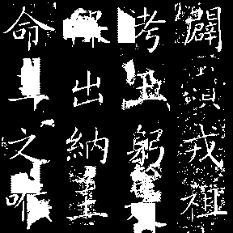
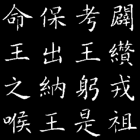
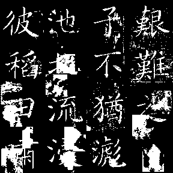
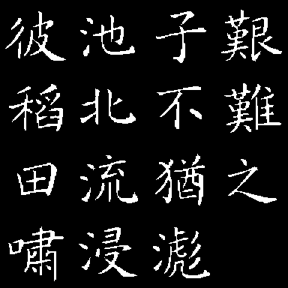
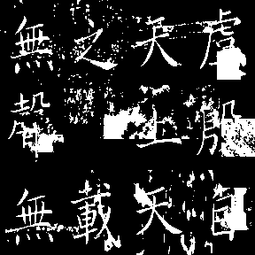
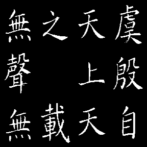
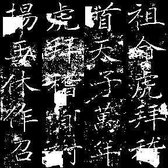
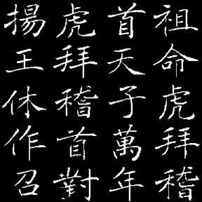
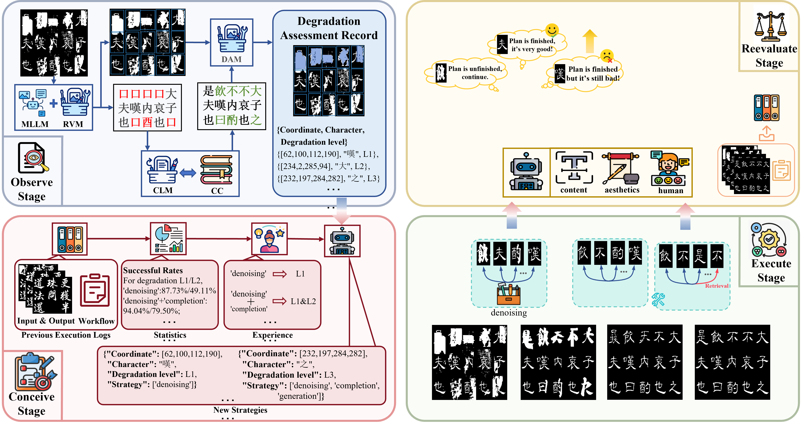
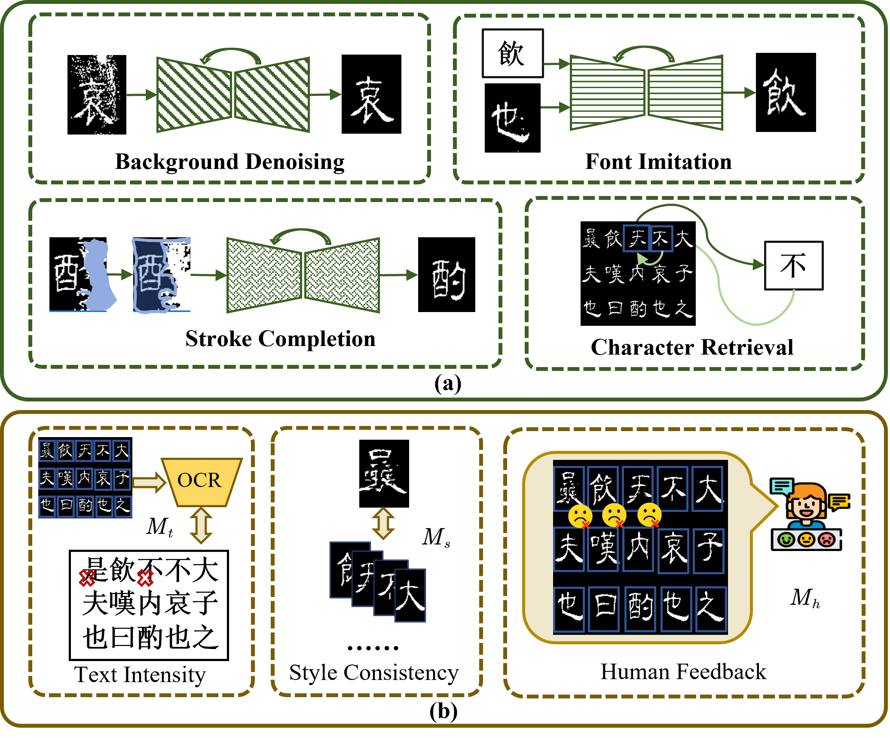

研究方向 · 碑拓智能修复
从残损图像到可信的历史文本
针对碑拓研究中的风化、破损与文字漫漶等问题，融合细粒退化分析、专家模式学习、修复决策进化与自主修复质量评估，构建兼顾信息准确性与书法风格保真性的智能修复方法，推动碑拓修复走向历史信息与文化价值的深度重建。
研究背景：图像中的历史证据
古籍承载历史、书法与文化特征，常因自然老化、扫描噪声与人为破坏而难以辨读。智能修复需兼顾文字可读性、字形完整性与书风保真性，为文献研究和文化传承提供可靠依据。
研究由此形成一个核心问题：如何在改善可读性的同时，维持字形结构与书法风格，使修复结果能够进一步辅助辨识和校勘。
CIRI：从材料多样性到修复基准
研究首先需要回答：怎样的材料能够代表真实的修复难度？材料纹理、书体与保存状态共同影响文字的可辨识性。CIRI 将碑拓中的书法风格、字符结构、版式与退化类型共同纳入数据构建，使研究对象从孤立的缺损区域扩展为具有文本关联的碑拓图像。

真实残损图像往往缺少严格对应的完整版本。CIRI 结合真实碑拓与合成配对数据：前者保留复杂的退化分布，后者提供完整—残损对照，使图像质量与文本恢复能够接受不同层面的评价。
20,000训练样本
4,000合成测试样本
2,000真实测试样本（R-I + R-II）
CIRI 样例：残损输入与修复输出
下面四组样例展示噪声与笔画缺损对字形结构的影响，并对照 IR3 方法的修复输出。右侧为方法结果，用于观察恢复效果，并非数据集的人工真值。
残损输入

修复输出

残损输入

修复输出

残损输入

修复输出

残损输入

修复输出

在此基础上，问题由“能否恢复图像”推进为“怎样同时保持视觉表现与文本完整性”，从而引出全局—局部协同的修复方法。
IR3：全局恢复与局部精修协同
IR3（MM 2024）将修复分解为全局恢复、文本校正与局部细化。三个模块独立训练，并通过图像与文本信息相互连接，使整体视觉恢复能够进一步受到语义与字形结构的约束。

GRM · 恢复全局视觉结构
离散扩散模型首先处理二值碑拓图像，在整体层面恢复被噪声和缺损破坏的视觉结构，为后续文字分析提供输入。
TRM · 引入文本证据
对恢复结果进行字符检测、识别与排序，并结合语料检索校正文本，使图像中的候选字形与文献中的文字内容建立联系。
LRM · 细化局部字形
将校正后的字符结构与恢复后的上下文共同用于局部细化，进一步约束笔画与部件，减少仅依赖视觉补全产生的字形偏差。
该方法将图像修复与文本校正深度融合，然而真实碑拓图像往往耦合复杂的退化条件，固定的修复流程难以应对多样化的退化挑战，进一步推动研究转向能够自主选择工具、灵活调整修复策略并复核修复结果的自适应范式。
EpiAgent：面向真实复杂耦合退化的自适应修复
EpiAgent 将这一问题表述为分层规划：以多模态感知建立残损判断，由中心规划器结合历史执行经验生成修复策略，再调用专用工具执行迭代修复，并依据修复结果评估反馈决策。方法的核心思路是模仿专家协作的修复方式对修复过程进行动态解耦与灵活组织。

Observe · 建立残损评估记录
识别和预测碑拓的字符文本，定位残损区域并建模退化程度，为后续规划提供依据。
Conceive · 形成针对性修复策略
利用历史修复经验，结合碑拓的实际退化条件，为每个字符制定修复策略，将整体修复目标转化为字符层面的工具调用计划。
Execute · 协调专用工具
按需组合背景去噪、笔画补全、风格仿写与字符检索，使轻度噪声、局部断笔和严重缺失得到有效的针对性处理。
Reevaluate · 复核并调整路径
从文本真实性、书风一致性等角度评价修复结果，并结合可选的专家反馈决定接收修复候选或重新规划。

从 IR3 的模块化协同到 EpiAgent 的灵活自主工具规划，研究持续围绕同一目标展开：使图像修复能够接受文本和字形证据的约束，并根据真实材料与退化条件持续调整处理过程。
研究展望：从视觉可信到证据可核验
碑拓修复结果仍是基于现有证据的合理推断。尤其在关键笔画或整字缺失时，视觉上的自然流畅不足以证明历史真实性，同时候选字形仍需与原始图像、上下文和相关文献相互核验。
这一研究脉络将数据基准、结构约束与迭代决策连接起来，为可追踪、可复核的人机协同修复奠定基础。